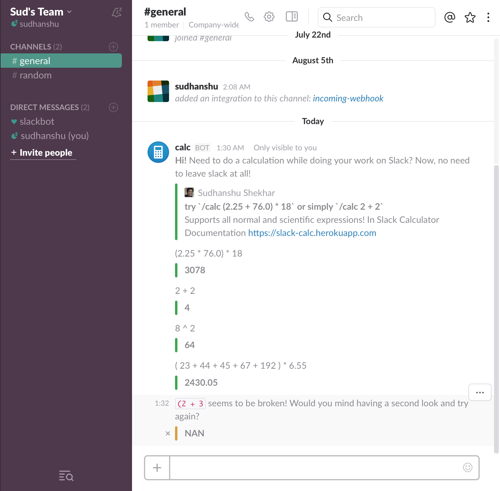

slack-calc
In Slack Calculator
Need to do a calculation while doing your work on Slack? Now, no need to leave slack at all!

Usage
Type
/calcfollowed by any expression, normal or scientific, to evaluate.
- /calc help
- /calc 2 + 2
- /calc (2.25 * 76.0) * 18
- /calc 8 ^ 2
- /calc sqrt(2)
- /calc sin(2.0)
- /calc log(2.0)
- /calc exp(2.0)
- /calc max(sin(2.0), tan(2.0))
- /calc min(exp(2.0), log(2.0))

Made with Love by @sudhanshu-shekhar Follow @zomansud